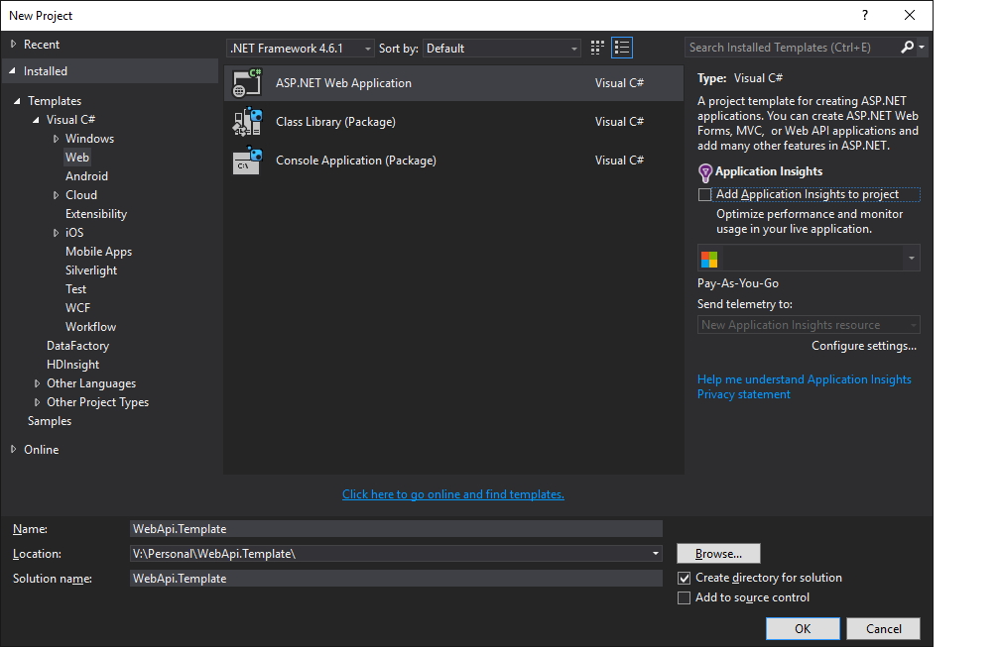
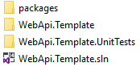
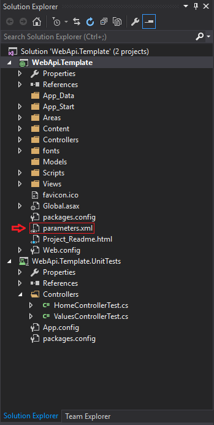
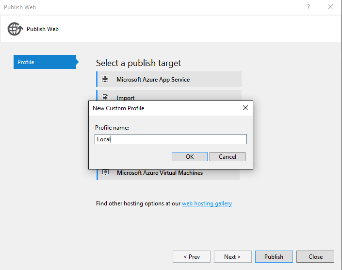
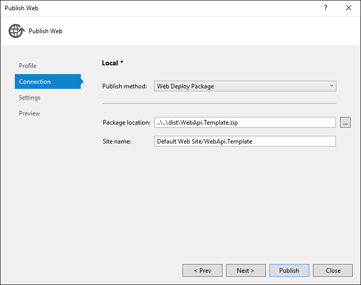
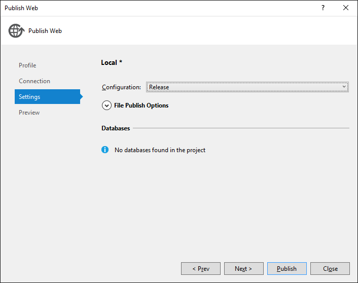
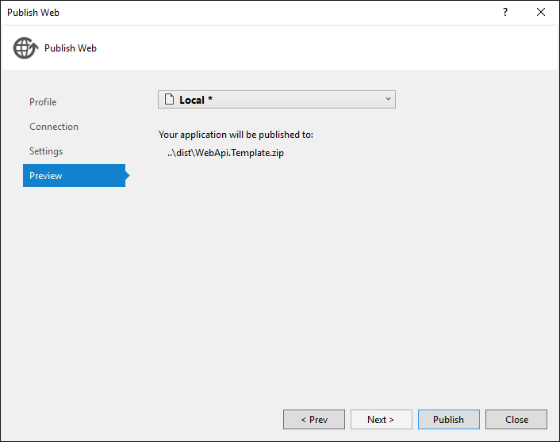
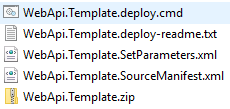

Parameterizing Web.config
Most people would have experienced the issue of setting values in web.config for a project on different environments, i.e. the connection string for the database. My first attempt at resolving this was to simply create multiple configurations and build the appropriate one per environment. This has multiple issues: you are including sensitive information in your build artifact, creating different builds for the same version (to allow different values) and tightly coupling your build process to your environment values. This will require a rebuild if your connection string changes, which could be problematic if you are unable to build a specific version easily. But it won’t be the exact same version as you would need to commit the new config value, re-tag and finally rebuild the solution. Sounds like too much effort for a simple change.
Creating a project to test this
First, let’s create a new solution to work with. Create project -> Web -> ASP.Net Web Application



Save the project and close it. Your folder should look like this:

You often have additional files to store in your version control system, so I prefer to keep all my source in a sub-folder called src. Move the files into the directory and you should have a folder structure like this:

Adding the parameters.xml file
There is feature that isn’t very well known: you can set parameters in the web.config at deployment time via a SetParameters.xml file if you are creating your build artifact via MSBuild. If you want to add additional parameters into it, add parameters.xml to the project you are publishing.

Now add the following content to it:
<parameters>
<parameter name="IIS Web Application Name" defaultValue="Default Web Site/WebApi.Template"/>
<parameter name="NHibernate Connection string" defaultValue="" >
<parameterEntry
kind="XmlFile"
scope="Website\\Web\.config$"
match="/configuration/connectionStrings/add[@name='NHibernateConnection']/@connectionString" />
</parameter>
<parameter name="LOGENTRIES_TOKEN" defaultValue="">
<parameterEntry
kind="XmlFile"
scope="Website\\Web\.config$"
match="/configuration/appSettings/add[@key='LOGENTRIES_TOKEN']/@value" />
</parameter>
</parameters>
The important parts to note here are:
name="<parameter name>"- Allows giving the parameter a human readable name, i.e.NHibnernation Connection stringdefaultValue=""- you can specify a default value to use if there is none in theSetParameters.xmlfile for it, i.e.INFOas the log level if not specified. Leaving it empty will enforce adding a value to theSetParameters.xmlfile.scope="Website\\Web\.config$"- Specifies the file to search using thematchstring. The default packaging does not put the files in this folder structure, more on that further down.match="/configuration/connectionStrings/add[@name='NHibernateConnection']/@connectionString" />- The location of the value to set using the value we provide. Once again, more on this further down.
Creating a publishing profile
This will allow you to add additional parameters to SetParameters.xml. To test what this does, we can use the publish feather in Visual Studio to publish to a local file. Create a publishing profile by right-clicking on the WebApi.Template project and selecting Publish and click on Custom. Use the following values which are relative to your project file. This is where the folder structure starts to help, we will be creating a dist folder next to the src one to which we will publish the project. Once we add the solution to source control, we can exclude the dist folder to avoid committing compiled code.




After clicking finish, you will should see the following in the build output at the bottom of Visual Studio:
1>------ Build started: Project: WebApi.Template, Configuration: Release Any CPU ------
1> WebApi.Template -> V:\Personal\WebApi.Template\src\WebApi.Template\bin\WebApi.Template.dll
2>------ Publish started: Project: WebApi.Template, Configuration: Release Any CPU ------
2>Transformed Web.config using V:\Personal\WebApi.Template\src\WebApi.Template\Web.Release.config into obj\Release\TransformWebConfig\transformed\Web.config.
2>Auto ConnectionString Transformed Areas\HelpPage\Views\Web.config into obj\Release\CSAutoParameterize\transformed\Areas\HelpPage\Views\Web.config.
2>Auto ConnectionString Transformed Views\Web.config into obj\Release\CSAutoParameterize\transformed\Views\Web.config.
2>Auto ConnectionString Transformed obj\Release\TransformWebConfig\transformed\Web.config into obj\Release\CSAutoParameterize\transformed\Web.config.
2>Copying all files to temporary location below for package/publish:
2>obj\Release\Package\PackageTmp.
2>Packaging into V:\Personal\WebApi.Template\src\dist\WebApi.Template.zip.
2>Adding sitemanifest (sitemanifest).
2>Adding IIS Application (V:\Personal\WebApi.Template\src\WebApi.Template\obj\Release\Package\PackageTmp)
2>Creating application (V:\Personal\WebApi.Template\src\WebApi.Template\obj\Release\Package\PackageTmp)
2>Adding virtual path (V:\Personal\WebApi.Template\src\WebApi.Template\obj\Release\Package\PackageTmp)
2>Adding directory (V:\Personal\WebApi.Template\src\WebApi.Template\obj\Release\Package\PackageTmp).
...
2>Adding file (V:\Personal\WebApi.Template\src\WebApi.Template\obj\Release\Package\PackageTmp\Web.config).
2>Adding ACL's for path (V:\Personal\WebApi.Template\src\WebApi.Template\obj\Release\Package\PackageTmp)
2>Adding ACL's for path (V:\Personal\WebApi.Template\src\WebApi.Template\obj\Release\Package\PackageTmp)
2>Adding declared parameter 'IIS Web Application Name'.
2>Adding declared parameter 'NHibernate Connection string'.
2>Adding declared parameter 'LOGENTRIES_TOKEN'.
2>Package "WebApi.Template.zip" is successfully created as single file at the following location:
2>file:///V:/Personal/WebApi.Template/src/dist
2>To get the instructions on how to deploy the web package please visit the following link:
2>http://go.microsoft.com/fwlink/?LinkId=124618
2>Sample script for deploying this package is generated at the following location:
2>V:\Personal\WebApi.Template\src\dist\WebApi.Template.deploy.cmd
2>For this sample script, you can change the deploy parameters by changing the following file:
2>V:\Personal\WebApi.Template\src\dist\WebApi.Template.SetParameters.xml
========== Build: 1 succeeded, 0 failed, 0 up-to-date, 0 skipped ==========
========== Publish: 1 succeeded, 0 failed, 0 skipped ==========
You will see the following lines in the output pertaining to our new parameters file:
2>Adding declared parameter 'IIS Web Application Name'.
2>Adding declared parameter 'NHibernate Connection string'.
2>Adding declared parameter 'LOGENTRIES_TOKEN'.
When you open up the zip, you will see the following:

Inside the SetParameters.xml you will see the following values:
<?xml version="1.0" encoding="utf-8"?>
<parameters>
<setParameter name="IIS Web Application Name" value="Default Web Site/WebApi.Template" />
<setParameter name="NHibernate Connection string" value="" />
<setParameter name="LOGENTRIES_TOKEN" value="" />
</parameters>
Changing the publish folder structure
By default, the location inside the zip file is fairly insane, here is what it would be for the project created above:
WebApi.Template.zip\Content\V_C\Personal\WebApi.Template\src\WebApi.Template\obj\Release\Package\PackageTmp for the project that is stored in V:\Personal\WebApi.Template\src. To address this, add the following to the end of your project file (I’ve included the default commented out before/after build targets help find the position):
<!-- To modify your build process, add your task inside one of the targets below and uncomment it.
Other similar extension points exist, see Microsoft.Common.targets.
<Target Name="BeforeBuild">
</Target>
<Target Name="AfterBuild">
</Target>
-->
<PropertyGroup>
<PackagePath Condition=" '$(PackagePath)'=='' ">Website</PackagePath>
<EnableAddReplaceToUpdatePackagePath Condition=" '$(EnableAddReplaceToUpdatePackagePath)'=='' ">true</EnableAddReplaceToUpdatePackagePath>
<PackageDependsOn>
$(PackageDependsOn);
AddReplaceRuleForAppPath;
</PackageDependsOn>
</PropertyGroup>
<Target Name="AddReplaceRuleForAppPath" Condition=" '$(EnableAddReplaceToUpdatePackagePath)'=='true' ">
<PropertyGroup>
<_PkgPathFull>$([System.IO.Path]::GetFullPath($(WPPAllFilesInSingleFolder)))</_PkgPathFull>
</PropertyGroup>
<!-- escape the text into a regex -->
<EscapeTextForRegularExpressions Text="$(_PkgPathFull)">
<Output TaskParameter="Result" PropertyName="_PkgPathRegex" />
</EscapeTextForRegularExpressions>
<!-- add the replace rule to update the path -->
<ItemGroup>
<MsDeployReplaceRules Include="replaceFullPath">
<Match>$(_PkgPathRegex)</Match>
<Replace>$(PackagePath)</Replace>
</MsDeployReplaceRules>
</ItemGroup>
</Target>
Now when we publish, the directory structure inside the archive will be: WebApi.Template.zip\Content\Website. This ties in the value specified in parameters.xml for the scope element.
XML Matching in Web.config
Earlier in this post, there was an element in the parameters.xml file called match with the following 2 values:
match="/configuration/connectionStrings/add[@name='NHibernateConnection']/@connectionString" />
match="/configuration/appSettings/add[@key='LOGENTRIES_TOKEN']/@value" />
This is used to lookup values in the web.config with a structure like this:
<configuration>
<connectionStrings>
<add name="NHibernateConnection" connectionString="Data Source=localhost;Initial Catalog=WebApiTemplate;Integrated Security=True" providerName="System.Data.SqlClient" />
</connectionStrings>
<appSettings>
<add key="LOGENTRIES_TOKEN" value="123456" />
<add key="SomeRandomValue" value="123456" />
</appSettings>
<customValues>
<value name="MyField">value</value>
</customValues>
</configuration>
You can see that the nesting of the xml matches the string in the match element. If you need to choose between multiple elements on a specific node, the <element name>[@<identifying field>='string to match'] will allow you to do so. I.e. for the LOGENTRIES_TOKEN node, unless you specify this, you will not be able to distinguish between it and SomeRandomValue. To set a value between the xml tags, i.e. <myField>value</myField>, you would use the matching string of match="/configuration/customValues/value[@name='MyField']/text()".
In later posts, I will be showing how to incorporate this into your PSake build script, here is what it will resemble:
msbuild /t:Package /v:q /p:VisualStudioVersion=12.0 /p:Configuration=Release /p:PackageLocation=..\dist\WebApi.Template.zip /p:ProjectParametersXMLFile=src\WebApi.Template\parameters.xml /p:DeployIisAppPath=dist src\WebApi.Template\WebApi.Template.csproj
Lastly
We now have the ability to build and package our project without including any configuration required to run it. When it is time to deploy the api, you can set values in the SetParameters.xml file according to your environment and use MSDeploy to deploy. At the moment, you might be thinking that is a lot of effort for something that still requires manual intervention. Stay tuned, in the next post, I will show you how to create a build script using PSake that will build on top of this and the following post how we start automating deployments using this mechanism.